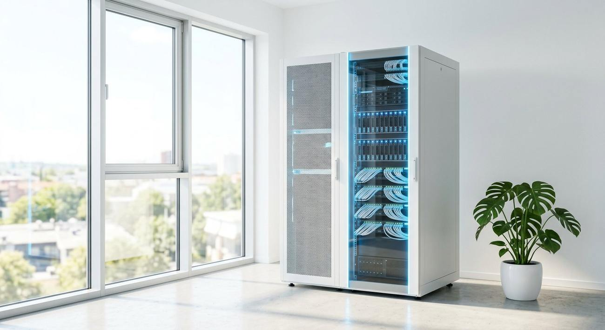
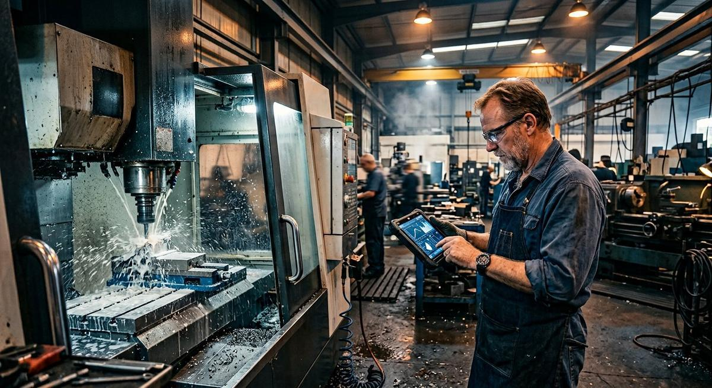
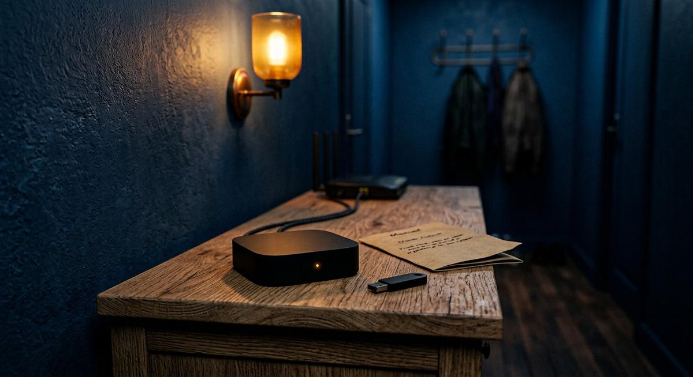

Vos procédures, contrats et dossiers restent chez vous — sur vos serveurs ou chez un hébergeur français. L'assistant que nous installons répond aux questions de vos équipes en citant ses sources, et il ne peut pas inventer : si l'information n'est pas dans vos documents, il le dit.

Procédures, contrats, FAQ, notes de service… Ils sont copiés dans un espace sécurisé : chez vous, ou chez un hébergeur français. Rien ne part à l'étranger.
Il ne « mémorise » pas vos textes : il apprend à y retrouver l'information exacte quand une question est posée — comme un bibliothécaire très rapide. (Les spécialistes appellent cela un RAG.)
« Quelle est notre politique de congés ? » — réponse claire en quelques secondes, avec la référence du document. Vérifiable, traçable, sans invention.
Ci-dessous, une base documentaire jouet (4 mini-documents) et un moteur de recherche réel : il analyse votre question, en extrait les mots-clés, note chaque document et cite le passage utilisé. En production, on remplace le comptage de mots-clés par des embeddings (qui comprennent aussi les synonymes) — mais le principe reste exactement celui-ci.
« Où en est le dossier Martin, et quels justificatifs manquent ? »
L'assistant répond en 3 secondes en citant la fiche client et le dernier échange. Le collaborateur gagne 20 minutes par dossier.
« Quelle procédure appliquer pour ce type de demande ? »
L'agent d'accueil obtient la bonne procédure et le bon formulaire, avec la référence exacte du règlement — sans des mois de formation.

PME industrielle« Quelles sont les consignes de maintenance de cette machine ? »
La documentation technique éparpillée devient interrogeable par tous — même par un intérimaire arrivé la veille.
La solution la plus confidentielle : tout est installé sur votre matériel, sans aucune connexion sortante. Pour les données sensibles.

Un petit serveur prêt à l'emploi, livré configuré, qui se branche sur votre réseau. Mises à jour à distance, simple comme une box internet. Location ou achat, selon votre besoin.
Sur un cloud français certifié (type OVHcloud, Scaleway), géré pour vous. Le bon compromis simplicité / souveraineté.